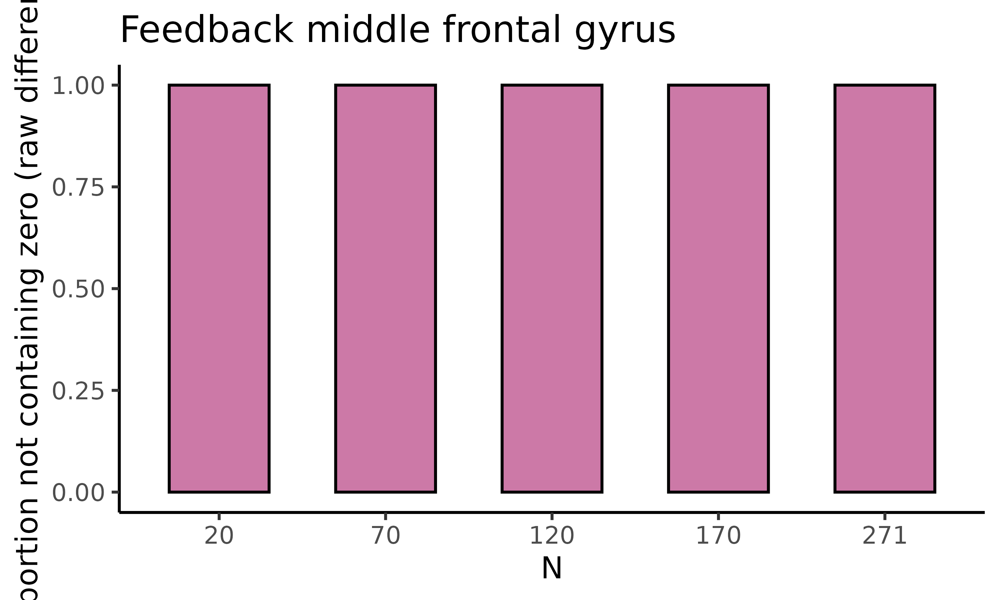
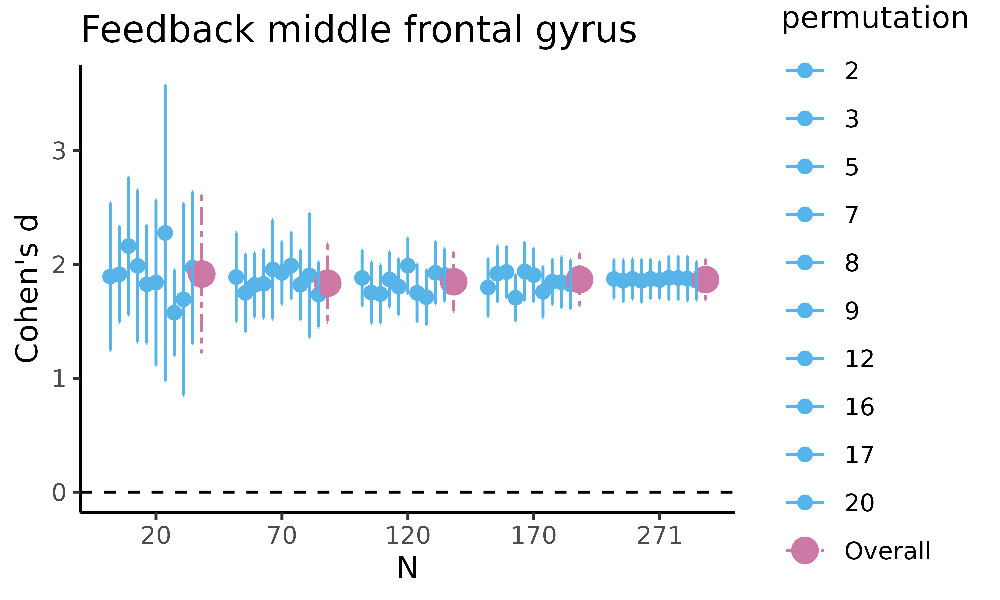
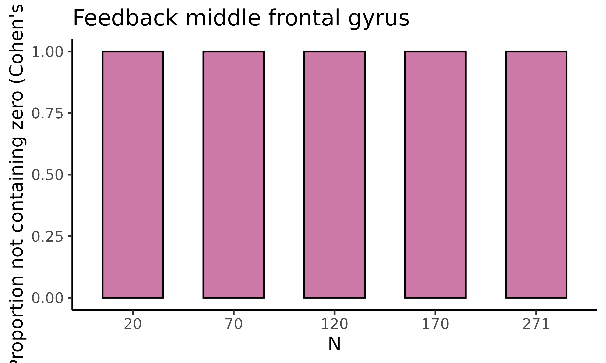
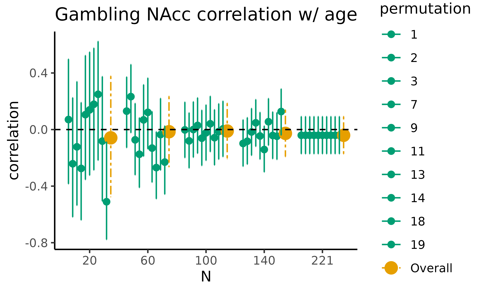
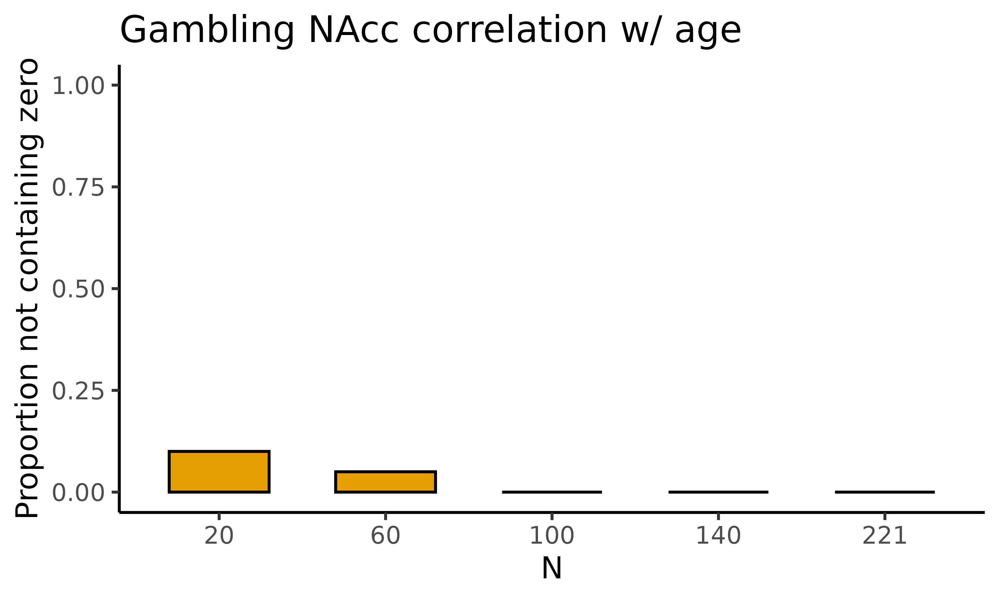

Introduction to neuroUp
neuroUp.RmdAre you:
Planning a task-related functional MRI (fMRI) study?
Focusing on effects in regions of interest?
Aiming to properly power such a study with an adequate sample size to reliably detect effects of interest?
Able to access a previously collected dataset that used a similar task?
Then the neuroUp package can help:
When you supply existing data from a similar task and similar region of interest.
It will provide sample size estimations using empirical Bayesian updating.
The package will build plots that show the sample size required to estimate raw differences, Cohen’s d, or Pearson’s correlation with a certain precision.
Using these estimates you can plan your research project, and report empirically determined sample size estimations in your research proposal or pre-registration.
This document will show how to use the package.
Data: feedback fMRI task
As an example, we read the Feedback task fMRI region of interest data
using the read_csv() function from the readr
package. This data comes shipped with the NeuroUp package
in two forms: as an R dataset that you can directly call using
feedback and as a csv file in the
extdata/ folder. Here, we load the data from the csv-file
to mimic the expected use-case that you have region of interest data in
a similar format:
# load feedback.csv data located at local system
feedback_csv <- (system.file("extdata/feedback.csv", package = "neuroUp"))
# use read_csv function to load csv-file as tibble
feedback_data <- readr::read_csv(feedback_csv)
#> Rows: 271 Columns: 4
#> ── Column specification ────────────────────────────────────────────────────────
#> Delimiter: ","
#> dbl (4): participant_id, age, mfg_learning, mfg_application
#>
#> ℹ Use `spec()` to retrieve the full column specification for this data.
#> ℹ Specify the column types or set `show_col_types = FALSE` to quiet this message.When you have a csv-file locally you can load it directly like this:
taskname_data <- readr::read_csv("path/to/filename.csv")Estimate raw differences and Cohen’s d
estim_diff allows you to determine the sample size
required to estimate differences in raw means and Cohen’s d’s for
multiple sample sizes with a certain precision. Precision is presented
in the form of a 95% highest density credible interval (HDCI), that is,
the narrowest possible interval that is believed to contain the true
value of the parameter of interest with a probability of .95 . The
narrower this interval, the higher the precision with which the
parameter is estimated.
In this example, we are interested in the contrast between the
learning phase and the application phase in the atlas-based middle
frontal gyrus during the feedback task. We use an existing dataset with
a sample size of N = 271, and for all sample sizes between
a minimum (e.g., N = 20) and maximum sample size of the
sample at hand the estim_diff() function will compute the
HDCI. To account for the arbitrary order of the participant in a data
set, this is done for a set number of permutations (50 by default), of
the participants in the data set. For each sample size, the average HDCI
of all permutations is also calculated.
The following arguments need to be provided:
datashould be a dataframe with the data to be analyzed (feedback_datain our example)vars_of_interestshould be a vector containing the names of the variables to be compared on their means (c("mfg_learning", "mfg_application")in our example)sample_sizeis the range of sample size to be used (20:271in our example)kis the number of permutations to be used for each sample size. We will use a smaller number (20) than the default (50) to reduce the build-time of this vignettenameis an optional title of the dataset or variables to be displayed with the figures. We will use"Feedback middle frontal gyrus"in our example
We provide these arguments to the estim_diff() function
and store it in a new object called feedback_estim. Before
we do so, we set the seed value to make sure we get the same results
when re-running the function.
set.seed(1234)
feedback_estim <- estim_diff(feedback_data,
c("mfg_learning", "mfg_application"), 20:271,
20, "Feedback middle frontal gyrus")Explore estim_diff() output
The estim_diff() function provides several outputs that
we can call to explore the results of the estimations. We will display
the different outputs below.
fig_diff: scatterplot with HDCI’s for difference in raw means
First, we will plot fig_diff, which returns a
scatterplot for the difference in raw means, where for five different
sample sizes, 10 out of the total number of HDCI’s computed are
displayed (in light blue). The average estimate with credible interval
summarizing the total number of HDCIs for each sample size are plotted
in reddish purple
feedback_estim$fig_diff
fig_nozero: barplot with proportion permutations not containing zero for difference in raw means
The second plot we will display is fig_nozero, which
returns a barplot where for each of the five sample sizes the proportion
of permutations not containing zero is displayed for the difference in
raw means:
feedback_estim$fig_nozero
fig_cohens_d: scatterplot with HDCI’s for difference in raw means
Next, we will plot fig_cohens_d, which returns a
scatterplot for Cohen’s d, where for five different sample sizes, 10 out
of the total number of HDCI’s computed are displayed (in light blue).
The average estimate with credible interval summarizing the total number
of HDCIs for each sample size are plotted in reddish purple:
feedback_estim$fig_cohens_d
fig_d_nozero: barplot with proportion permutations not containing zero for difference in raw means
The final plot we will display is fig_d_nozero, which
returns a barplot where for each of the five sample sizes the proportion
of permutations not containing zero is displayed for Cohen’s d:
feedback_estim$fig_d_nozero
tbl_select & tbl_total: tibbles with estimates
The estim_diff() function also returns two tibbles with
the values on which the previous plots are based.
tbl_select returns a tibble containing estimates of the
difference in raw means and of Cohen’s d with associated SD, SE, 95% CI,
and width of the 95% CI (lower, upper) for five different sample sizes
(starting with the minimum sample size, then 1/5th parts of the total
dataset). This is the summary data used to plot the figures:
feedback_estim$tbl_select
#> # A tibble: 55 × 13
#> N estimate variance stdev sterror lower upper cohens_d d_lower d_upper
#> <fct> <dbl> <dbl> <dbl> <dbl> <dbl> <dbl> <dbl> <dbl> <dbl>
#> 1 20 3.21 3.07 1.75 0.392 2.45 3.98 1.89 1.24 2.54
#> 2 70 2.82 2.32 1.52 0.182 2.46 3.18 1.89 1.50 2.28
#> 3 120 2.89 2.41 1.55 0.142 2.61 3.17 1.88 1.64 2.13
#> 4 170 2.67 2.21 1.49 0.114 2.45 2.89 1.80 1.54 2.05
#> 5 271 2.83 2.32 1.52 0.0925 2.65 3.01 1.87 1.70 2.04
#> 6 20 2.97 2.60 1.61 0.360 2.27 3.68 1.91 1.49 2.34
#> 7 70 2.92 2.87 1.69 0.202 2.52 3.32 1.75 1.41 2.09
#> 8 120 2.68 2.44 1.56 0.143 2.40 2.96 1.75 1.48 2.02
#> 9 170 2.94 2.41 1.55 0.119 2.71 3.18 1.92 1.67 2.16
#> 10 271 2.83 2.32 1.52 0.0925 2.65 3.01 1.86 1.67 2.04
#> # ℹ 45 more rows
#> # ℹ 3 more variables: permutation <fct>, nozero <dbl>, d_nozero <dbl>tbl_total returns a tibble containing estimates of the
difference in raw means and of Cohen’s d with associated SD, SE, 95% CI,
and width of the 95% CI (lower, upper) for all sample sizes, including
the permutation number. This is the total (large) table with all the
estimates for all requested sample sizes and permutations:
feedback_estim$tbl_total
#> # A tibble: 5,040 × 11
#> N estimate variance stdev sterror lower upper cohens_d d_lower d_upper
#> <int> <dbl> <dbl> <dbl> <dbl> <dbl> <dbl> <dbl> <dbl> <dbl>
#> 1 20 3.03 1.93 1.39 0.311 2.42 3.64 2.28 1.44 3.12
#> 2 21 3.24 3.68 1.92 0.419 2.42 4.06 1.80 0.754 2.85
#> 3 22 2.80 1.64 1.28 0.273 2.27 3.34 2.25 1.57 2.94
#> 4 23 2.84 2.53 1.59 0.331 2.19 3.49 1.84 1.25 2.43
#> 5 24 3.01 3.50 1.87 0.382 2.27 3.76 1.68 1.16 2.20
#> 6 25 2.71 2.20 1.48 0.296 2.13 3.29 1.86 1.28 2.44
#> 7 26 3.19 2.19 1.48 0.290 2.62 3.76 2.14 1.49 2.79
#> 8 27 2.75 2.60 1.61 0.310 2.14 3.36 1.82 1.19 2.45
#> 9 28 2.80 1.48 1.22 0.230 2.35 3.25 2.37 1.81 2.93
#> 10 29 2.67 2.36 1.54 0.285 2.11 3.23 1.80 1.35 2.24
#> # ℹ 5,030 more rows
#> # ℹ 1 more variable: permutation <int>Estimate correlations
Data: gambling fMRI task
As an example, we read the Gambling task fMRI region of interest data
using the read_csv() function from the readr
package. Just like the Feedback data above, this data comes shipped with
the NeuroUp package in two forms: as an R dataset that you
can directly call using gambling and as a csv
file in the extdata/ folder. Again, we load the data from
the csv-file to mimic the expected use-case that you have region of
interest data in a similar format:
# load gambling.csv data located at local system
gambling_csv <- (system.file("extdata/gambling.csv", package = "neuroUp"))
# use read_csv function to load csv-file as tibble
gambling_data <- readr::read_csv(gambling_csv)
#> Rows: 221 Columns: 5
#> ── Column specification ────────────────────────────────────────────────────────
#> Delimiter: ","
#> dbl (5): participant_id, age, lnacc_self_win, lnacc_self_loss, lnacc_self_wi...
#>
#> ℹ Use `spec()` to retrieve the full column specification for this data.
#> ℹ Specify the column types or set `show_col_types = FALSE` to quiet this message.Estimate correlations: estim_corr
estim_corr allows you to determine the sample size
required to estimate Pearson correlations for multiple sample sizes with
a certain precision. Precision is presented in the form of a 95% highest
density credible interval (HDCI), that is, the narrowest possible
interval that is believed to contain the true value of the parameter of
interest with a probability of .95 . The narrower this interval, the
higher the precision with which the parameter is estimated.
In this example, we are interested in the correlation between age and
activity in the anatomical mask of the left nucleus accumbens during the
gambling task (winning for self > losing for self contrast). We use
an existing dataset with a sample size of N = 221, and for
all sample sizes between a minimum (e.g., N = 20) and
maximum sample size of the sample at hand the estim_corr()
function will compute the HDCI. To account for the arbitrary order of
the participant in a data set, this is done for a set number of
permutations (50 by default), of the participants in the data set. For
each sample size, the average HDCI of all permutations is also
calculated.
The following arguments need to be provided:
datashould be a dataframe with the data to be analyzed (gambling_datain our example)vars_of_interestshould be a vector containing the names of the variables to be correlated (c("lnacc_self_winvsloss", "age")in our example)sample_sizeis the range of sample size to be used (20:221in our example)kis the number of permutations to be used for each sample size. We will use a smaller number (20) than the default (50) to reduce the build-time of this vignettenameis an optional title of the dataset or variables to be displayed with the figures. We will use"Gambling NAcc correlation w/ age"in our example
We provide these arguments to the estim_corr() function
and store it in a new object called gambling_estim. Before
we do so, we set the seed value to make sure we get the same results
when re-running the function.
set.seed(1234)
gambling_estim <- estim_corr(gambling_data,
c("lnacc_self_winvsloss", "age"), 20:221,
20, "Gambling NAcc correlation w/ age")Explore estim_corr() output
The estim_corr() function provides several outputs that
we can call to explore the results of the estimations. We will display
the different outputs below.
fig_corr: scatterplot with HDCI’s for correlations
First, we will plot fig_corr, which returns a
scatterplot for the difference in raw means, where for five different
sample sizes, 10 out of the total number of HDCI’s computed are
displayed (in green). The average estimate with credible interval
summarizing the total number of HDCIs for each sample size are plotted
in orange:
gambling_estim$fig_corr
fig_nozero: barplot with proportion permutations not containing zero for the correlations
The second plot we will display is fig_corr_nozero,
which returns a barplot where for each of the five sample sizes the
proportion of permutations not containing zero is displayed for the
correlations:
gambling_estim$fig_corr_nozero
tbl_select & tbl_total: tibbles with estimates of the correlations
The estim_corr() function also returns two tibbles with
the values on which the previous plots are based.
tbl_select returns a tibble containing estimates of the
Pearson’s correlation between two correlated variables with associated
SD, SE, 95% CI, and width of the 95% CI (lower, upper) for five
different sample sizes (starting with the minimum sample size, then
1/5th parts of the total dataset). This is the summary data used to plot
the figures:
gambling_estim$tbl_select
#> # A tibble: 55 × 6
#> N correlation lower upper permutation nozero
#> <fct> <dbl> <dbl> <dbl> <fct> <dbl>
#> 1 20 0.0708 -0.384 0.498 1 NA
#> 2 60 0.130 -0.128 0.372 1 NA
#> 3 100 -0.00247 -0.199 0.194 1 NA
#> 4 140 -0.0982 -0.260 0.0688 1 NA
#> 5 221 -0.0405 -0.172 0.0920 1 NA
#> 6 20 -0.242 -0.618 0.225 2 NA
#> 7 60 0.233 -0.0224 0.460 2 NA
#> 8 100 -0.0800 -0.272 0.118 2 NA
#> 9 140 -0.0827 -0.245 0.0844 2 NA
#> 10 221 -0.0405 -0.172 0.0920 2 NA
#> # ℹ 45 more rowstbl_total returns a tibble containing estimates of the
Pearson’s correlation between two correlated variables with associated
SD, SE, 95% CI, and width of the 95% CI (lower, upper) for all sample
sizes, including the permutation number. This is the total (large) table
with all the estimates for all requested sample sizes and
permutations:
gambling_estim$tbl_total
#> # A tibble: 4,040 × 5
#> N correlation lower upper permutation
#> <int> <dbl> <dbl> <dbl> <int>
#> 1 20 0.0708 -0.384 0.498 1
#> 2 21 -0.377 -0.696 0.0649 1
#> 3 22 -0.176 -0.556 0.266 1
#> 4 23 -0.246 -0.597 0.185 1
#> 5 24 -0.180 -0.544 0.241 1
#> 6 25 0.0508 -0.351 0.437 1
#> 7 26 -0.229 -0.566 0.174 1
#> 8 27 -0.119 -0.478 0.273 1
#> 9 28 0.288 -0.0950 0.597 1
#> 10 29 0.0859 -0.290 0.439 1
#> # ℹ 4,030 more rows